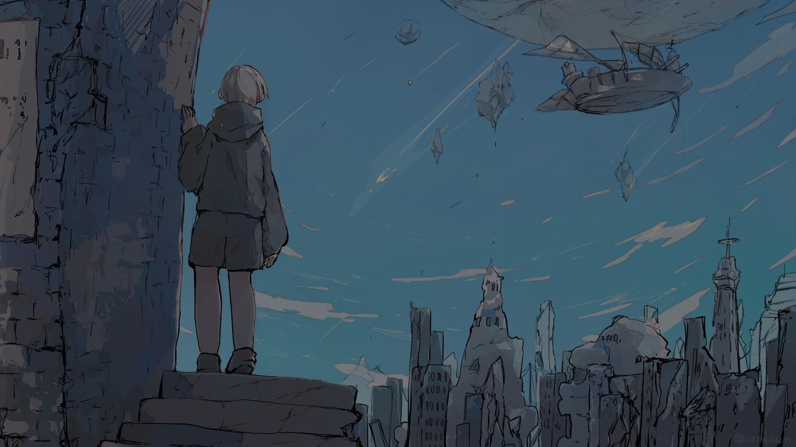
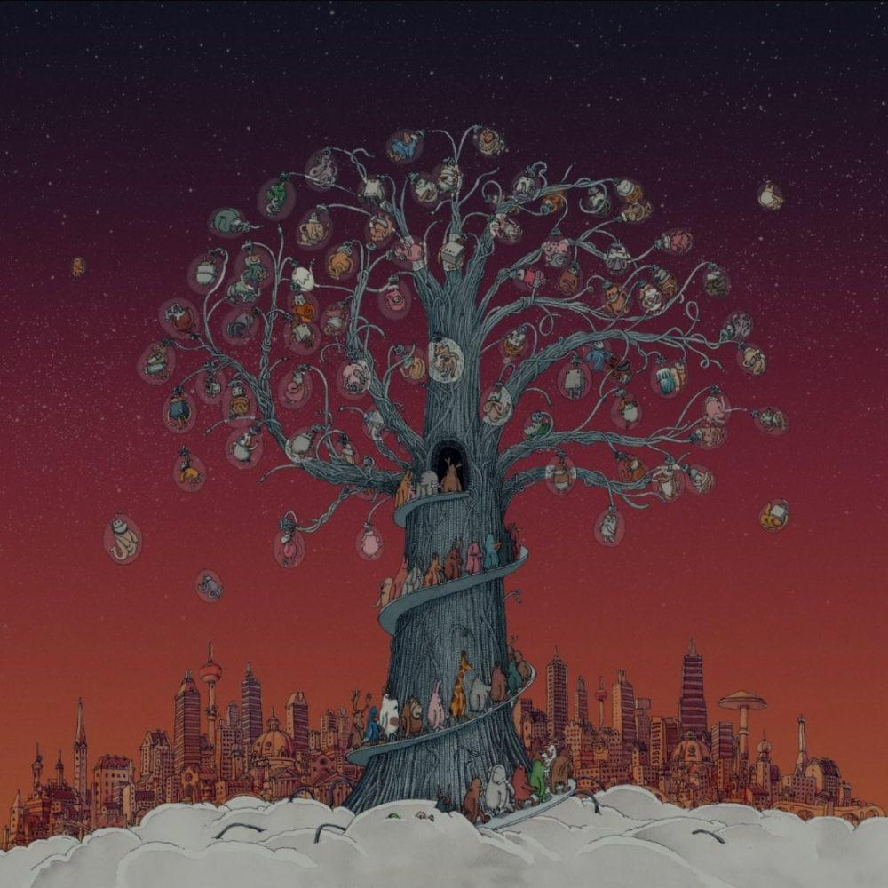
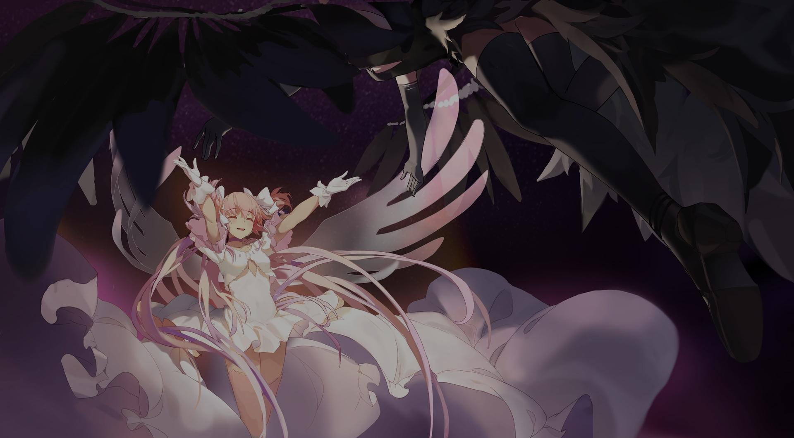
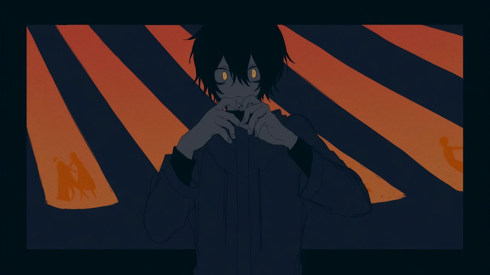

5.26
NM
NM
プリマステラ
鹿乃
5.22
NM
NM
F.I
44teru-k
![kessoku band - Seiza ni Naretara (cutefro) [Another]](./darkened-backgrounds/3970478.jpg)
4.26
NM
NM
星座になれたら
結束バンド

4.69
NM
NM
マーメイド
monaca:factory feat. ジェム

5.09
NM
NM
Son of Robot
Dance Gavin Dance

5.05
HD
HD
ケアレス
ClariS
![IOSYS - Hinarin no Yakui Kankei (Edit ver.) (Luscent) [allein's Insane]](./darkened-backgrounds/4392029.jpg)
4.57
HD
HD
ひなりんのヤクい関係 (Edit ver.)
IOSYS
![Omoi - Teo (Kroytz) [Akitoshi vs. SnowNiNo's Insane]](./darkened-backgrounds/1531842.jpg)
5.00
HR
HR
テオ
Omoi
Mapper: Kroytz
Difficulty: Akitoshi vs. SnowNiNo's Insane
Beatmap ID: 1531842
CS
5.2
AR
10.0
OD
10.0

185.0

3:23

1303

3.54
HR
HR
YELLOW
有機酸
5.10
DT*
DT(speed_change=1.75)
天空カフェテリア
Petit Rabbit's
5.15
DT
DT
无可言喻
Gentle Stick X M2U
5.19
DT*
DT(speed_change=1.45)
迷星叫
MyGO!!!!!
4.88 (5.21)
FM
FM
4.61 (5.22)
FM
FM
Luminous Memory
ミツキヨ
Mapper: CoLouRed GlaZeE
Difficulty: Kuse's Insane
Beatmap ID: 3681704
CS
5
AR
8.5
OD
8.0
100.0
2:14
713
5.67
TB
TB
花の塔 (nenpulse bootleg remix)
さユり
Mapper: Kanui
Difficulty: Kanui & Komarin's Collab Lily
Beatmap ID: 4324657
CS
4
AR
9.2
OD
8.5
175.0
6:29
2631